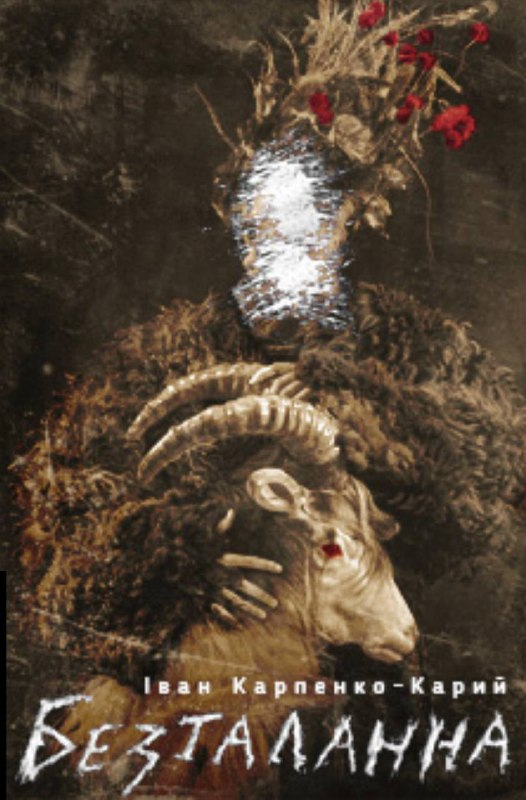
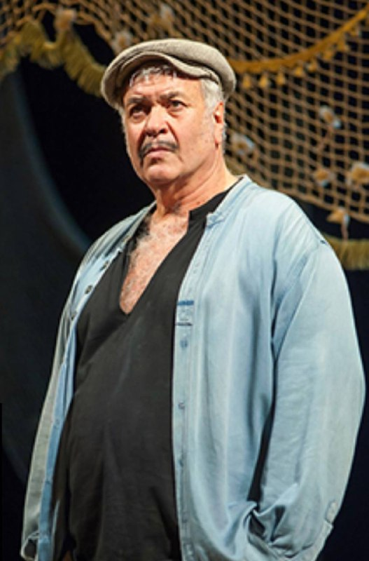
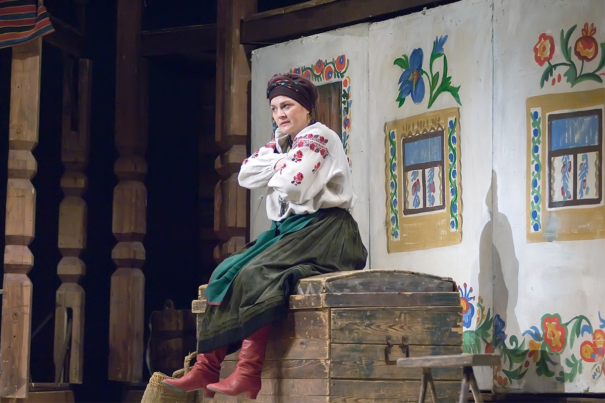
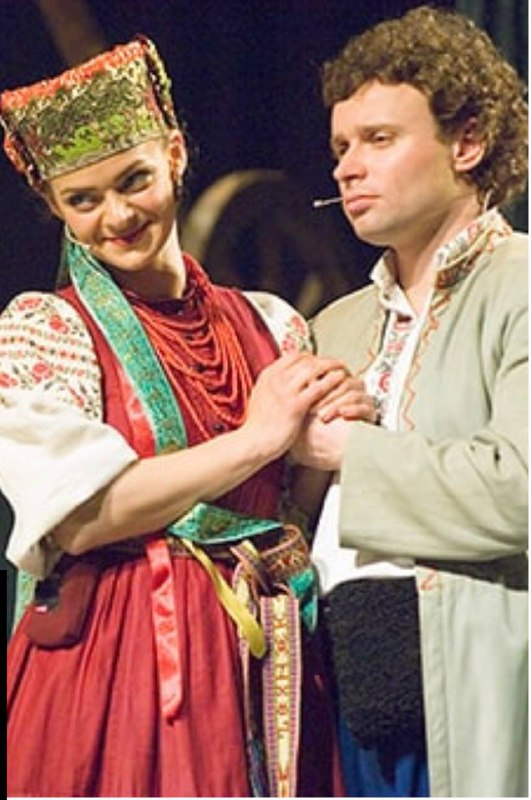

| 
Безталанна
Вистава на дві дії
Іван Карпенко-Карий |

Грек Зорба
Ранкова вистава
Театральний роман на 2 дії
П'єса Віталія Малахова та Анатолія Хостікоєва за мотивами роману Нікоса Казандзакіса «Я, Грек Зорба» |
| 
Кайдашева сім'я
Ранкова вистава
Комедія на 2 дії
Іван Нечуй-Левицький
Сценічна версія театру Франка |

Наталка Полтавка
Ранкова вистава
Українське музично-драматичне рококо, теє-то, як його на 2 дії
Іван Котляревський
Музика Миколи Лисенка, Олега Скрипки |